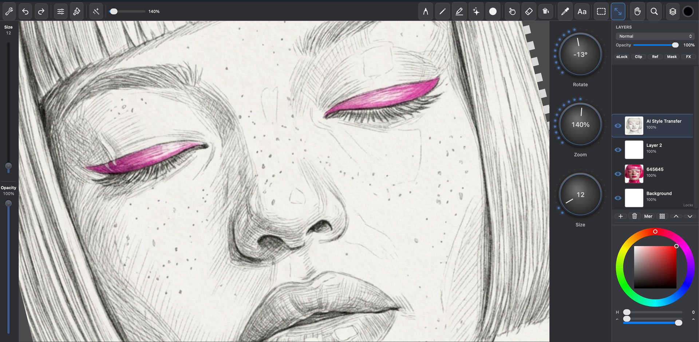
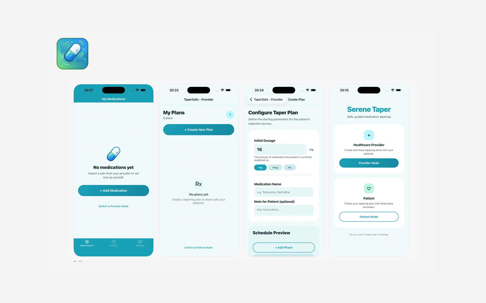
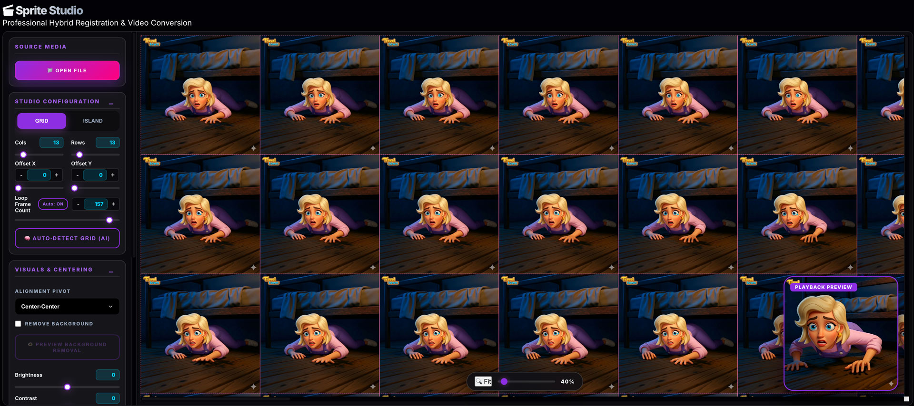
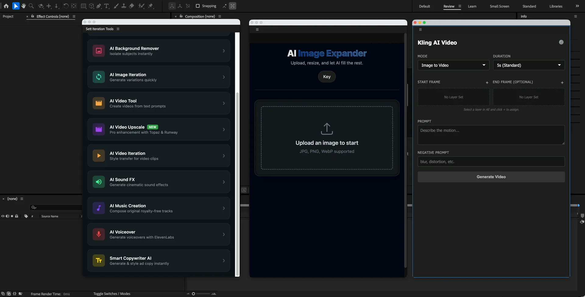
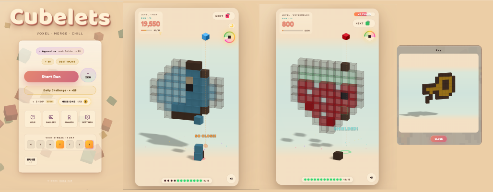
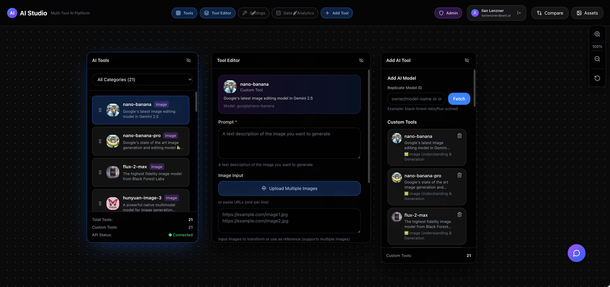
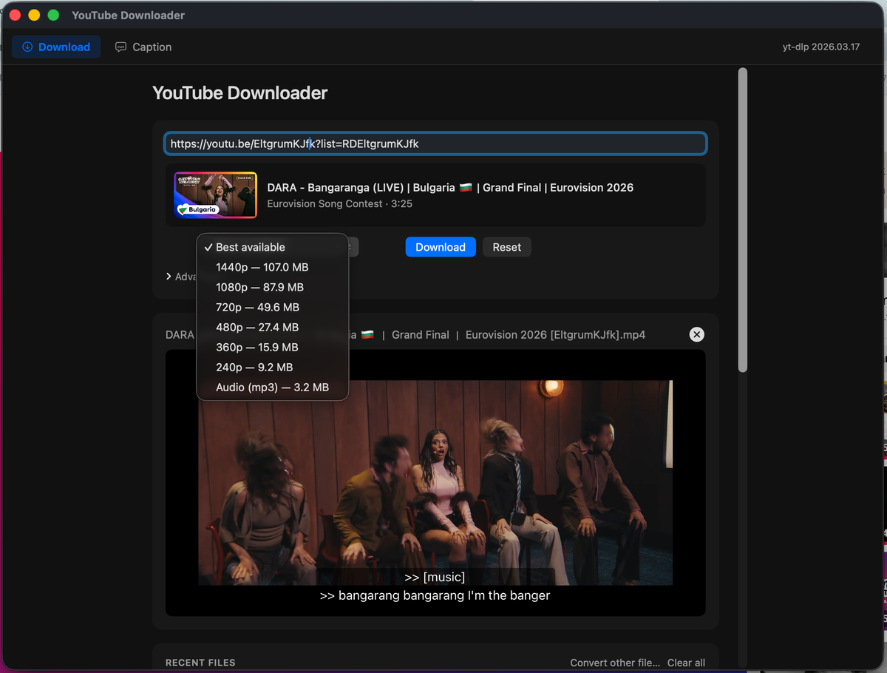
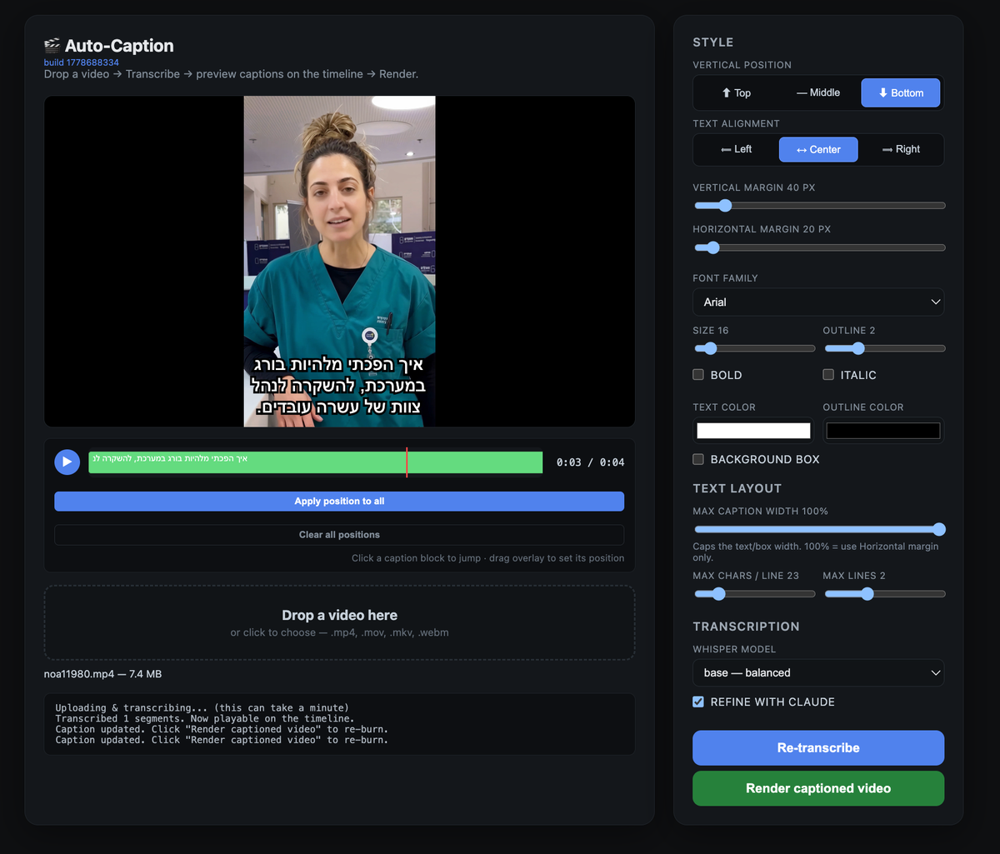
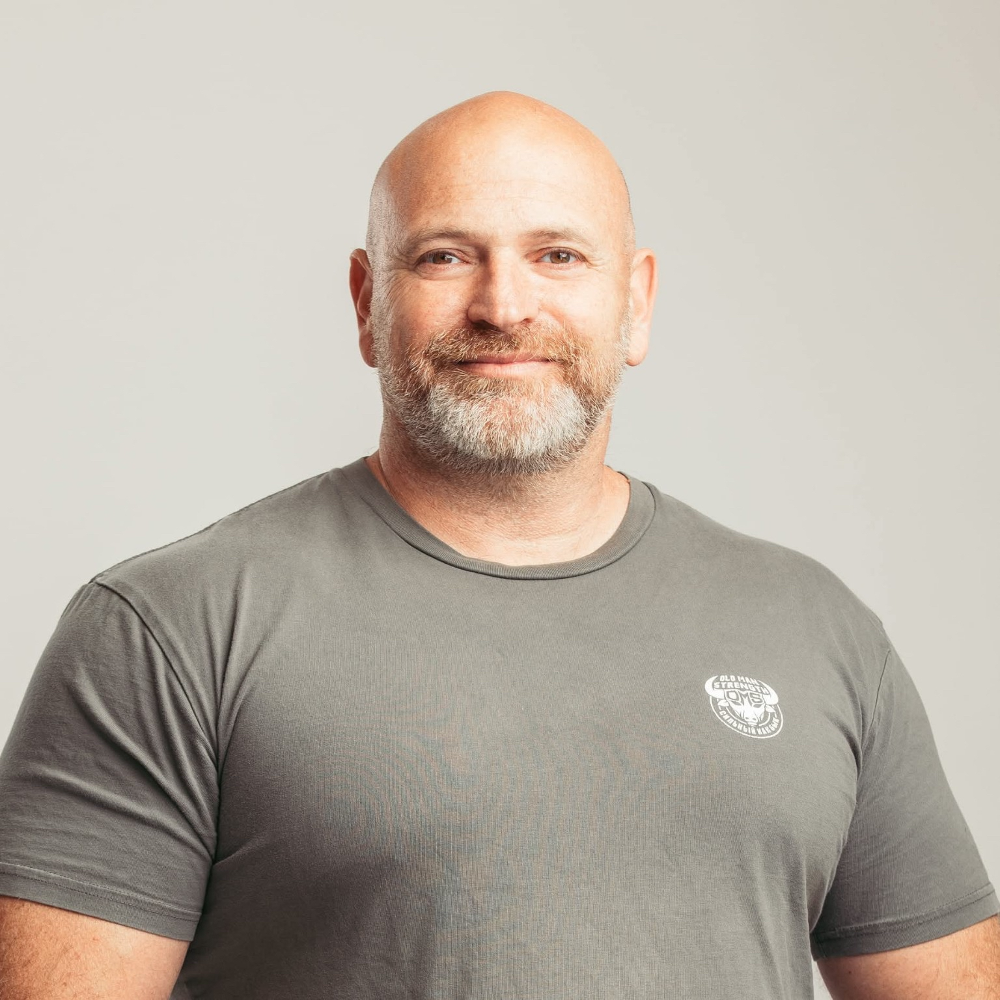

From autonomous ad pipelines to AI tools used daily by 100+ production team members - I design and build systems that replace manual workflows with scalable automation. Currently leading AI creative tooling at Sett.
Problem: Accessibility on the web is fragmented - every site, app, and reader-mode tool asks the user to reconfigure font size, contrast, color-blindness filters, and reading aids from scratch. Built: A cross-browser extension + Cloudflare Worker backend that carries a single user profile across every page - adaptive reading view, 8 color-blindness filters, low-vision reflow, form simplification, AI alt-text, and a screen-reader companion mode. End-to-end design system, marketing site, privacy policy, and Chrome Web Store submission package shipped.

Problem: Artists needed a fast, native tool for concept art that integrates AI editing without leaving their canvas. Built: A full macOS drawing app with AI-powered editing, layers, brushes, and a Procreate-inspired UI, designed in collaboration with the art team to fit real production workflows.

Problem: Patients tapering off medications need a safe, clear way to track gradual dose reductions, while providers need a way to share evidence-based taper plans. Built: A native iOS app with separate patient and provider modes, on-device data privacy, daily dose reminders, and QR code plan sharing between clinicians and patients. Shipped end-to-end and live on the App Store.

Problem: Converting video sequences to sprite sheets took artists hours of manual work per asset. Built: A production pipeline with AI-powered grid detection, chroma key, and multi-format export. Integrated into the team's existing workflow, reducing a multi-hour process to minutes.

Problem: Motion designers constantly context-switched between AE and external AI tools. Built: A 10-module AI extension embedded directly in After Effects: image expansion, upscaling, background removal, video generation, audio, and copywriting. Developed with the motion team to eliminate round-trips and keep artists in their native environment.

Problem: Casual mobile puzzlers tend to be either mindless tappers or punishingly tight - I wanted a cozy, satisfying merge-and-build loop that rewards spatial thinking without stress. Built: A voxel-sculpture merge puzzle as a fully playable PWA - drop blocks to fill ghosted 3D shapes, with daily challenges, a gallery, and a chill "Zen" mode. Designed and built end-to-end: game design, art direction, and code.

Problem: The creative team needed one unified interface for multiple GenAI capabilities instead of juggling separate tools. Built: A modular production platform for image generation, video processing, 3D modeling, and background removal, on Replicate API, deployed for daily use by the creative and production teams.

Problem: Existing YouTube downloaders are either sketchy ad-laden web services or command-line tools nobody non-technical wants to touch. Built: A native desktop app - SwiftUI on macOS, a Flask + Edge --app shell on Windows - wrapping yt-dlp, ffmpeg, and deno into one drop-in installer. Quality picker (up to 4K), trim, multi-language subtitles with auto-translate, "Make compatible" mp4 re-encoder, inline player, self-updating yt-dlp. Shipped as signed .dmg and Inno Setup installer with GitHub Actions auto-builds.

Problem: Burning styled captions into videos is a slow round-trip through Premiere or paid SaaS, and YouTube's auto-translate is famously out of sync. Built: A self-hosted FastAPI app that runs OpenAI Whisper on the audio, optionally polishes the segments with Claude, and burns the result through FFmpeg + libass. In-browser editor with a timeline, drag-to-position overlays, and a live preview that matches the burned output to the pixel. Bundled into the YouTube Downloader's "Caption" tab via an embedded WKWebView.
See more on GitHub

From 3D animation to interactive ads to AI product engineering.
Today I architect autonomous AI pipelines that generate, animate, and ship creative assets end-to-end, turning workflows that once took days into minutes.
I think in systems, design in Figma, and ship in code.
Designed 45+ AI production tools for playable ad teams - owned end-to-end UX from research through shipped interfaces, adopted as daily tools by a 100+ person creative team. Led UX for an AI character animation system that reduced asset creation from 4 hours to 15 minutes. Designed 5 After Effects extensions and a native macOS drawing app with Procreate-inspired UI.
Designed clinical dashboards and patient-facing interfaces used across 4 hospital departments. Led UX for AI-powered patient engagement systems - user interviews with physicians and nurses, translating clinical needs into intuitive interfaces. Created 3D surgical planning visualizations with surgeons.
Led UX/UI design for AI-powered creative tools as sole designer on an 8-person product team. Designed automation interfaces that replaced manual creative workflows.
Designed B2B SaaS platform for employee engagement and training serving 10,000+ users. Built a comprehensive design system that reduced developer handoff friction by 40%.
Directed a team of 12+ designers, copywriters, and developers across interactive mobile ad campaigns for Fortune 500 clients. Created modular ad template systems that cut production time by 60%.
Designed and launched 500+ rich media campaigns for global agencies including WPP, Publicis, and Omnicom.
Created 3D animations, product visualizations, and motion graphics for broadcast and industrial clients.
I bring deep, hands-on experience shipping creative products, real GenAI production experience, and the rare ability to bridge design, engineering, and AI into systems that actually work.
@ilanzner